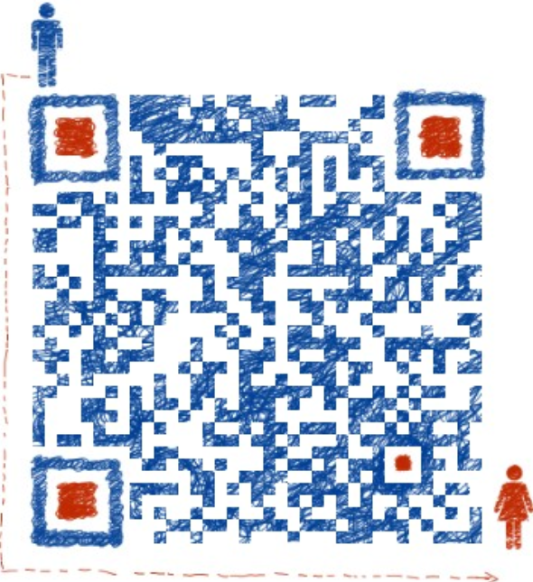

| Prefect Travrling | 首页 | 地区介绍 | 景区介绍 | ||||||||
|
|||||||||||
| 和平古镇—福建美的"城堡式古镇" |
| 2018-06-10 00:00 |
几年前，一个学生提到她家在和平古镇并邀我去古镇参观时，自己就对和平古镇有了很大的兴趣。可是因为当时交通不是很便利就给耽搁了（当时只能坐很久的绿皮火车到邵武，然后再转汽车去和平镇），没想到一晃这么多年过去了。前些日子，央视的"乡愁"节目让我真正认识了这个福建最美的城堡式古镇，于是就有了果断前往那里的冲动。 和平古镇位于闽西北的邵武境内，古称"禾坪"（禾苗的禾，草坪的坪）意为地势平坦，盛产粮食，是一座古城堡。其始建于唐朝，是福建历史最为悠久的古镇之一，也是全国罕见的具有城堡和谯楼的古村镇。和平古镇保留了完整的古街巷。古街巷的特色多为中间铺青石板，两边铺鹅卵石，有些较小的巷子则全部铺鹅卵石。城堡内以南北走向的古巷为主街，虽有点蜿蜒，但在城堡内是最直的一条街道了。此街道贯穿南北城门，是古镇最为繁华的商业街，被誉为"福建第一街"。古街全长600余米，宽6－8米，以中心青石板两旁鹅卵石铺筑，因北高南低的地形关系，街道随形就势形成"九曲十三弯"，宛如一条腾空欲飞的青龙。 和平古镇里有近200间青砖琉瓦、雕梁画栋、气派非凡的明清时代的豪宅。即使是普通的木结构民居，其建筑风格也十分精致。古镇里的和平书院创办于五代后唐，是中国创办最早的书院之一。此外，古镇还是太极祖师张三丰的诞生地。 去过那么多的古镇，有一个共同点就是：每次自己来古镇几乎都会下雨。时常是来时阴雨连绵，然后第二天就转晴了。而这次则是来时还是晴空万里，阳光普照，没想到刚逛了一个小时，就乌云翻滚，雷雨交加。在古镇的三个小时，也是雷雨和阳光交替。对于拍摄古镇来说，这样交替的天气是很完美的，蓝天白云的晴好天气可以为我的拍摄增添了美丽的天空背景，而雨水更增添了古镇街道和建筑的色彩和质感。 古镇南门虽然是后来修缮的，却是古镇的主城门，也是古镇的主要名片之一，因为它位于中轴线——"福建第一街"的起点。在古镇的四大城门中，只有北门和东门是较为完好地保留下来的古城门。 |
| 下一篇：崇武大岞一日游成半日游,风雨无情人有情 |
PREFECT TRAVLING |
 | 地址：江苏省苏州市张家港市福新路1号 电话：13601475824 邮箱：130638633@qq.com QQ： 1370638633 |